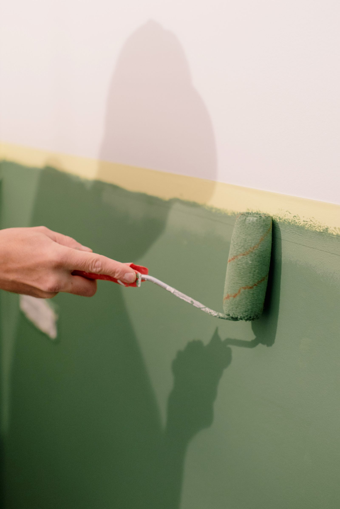
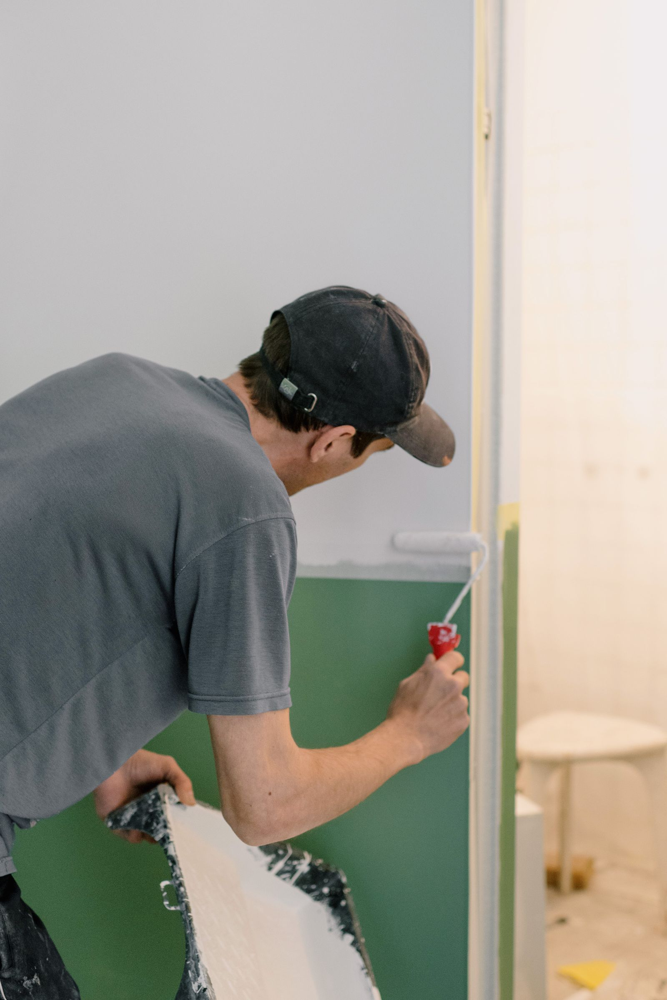

Magyar és angol kommunikáció tulajdonosokkal, kezelőkkel, Airbnb-házigazdákkal és irodai kapcsolattartókkal. Hungarian and English communication with owners, managers, Airbnb hosts and office contacts.
Festés és faljavítás Budapesten
Painting and wall repairs in Budapest
Tiszta, rendezett falak bérbeadás, vendégfogadás vagy átadás előtt. Clean, well-prepared walls before rental, guest arrival or handover.
Beltéri festés, repedésjavítás, glettelés, kisebb gipszkarton- és vakolathibák javítása budapesti lakásokban, Airbnb-ingatlanokban, irodákban és kiadásra vagy eladásra készülő otthonokban. Magyar és angol egyeztetés, fotós visszajelzés és szervezett időpontkezelés. Interior painting, crack repair, plastering, minor drywall and surface repairs for Budapest apartments, Airbnb homes, offices and properties being prepared for rental or sale. Hungarian and English coordination, photo updates and organised scheduling.

Mire figyelünk?
What matters
Felület-előkészítés, tiszta munka, követhető egyeztetés.
Surface preparation, clean workmanship and clear coordination.
Kérés szerint fotók a kiinduló állapotról, a javítási lépésekről és a festés utáni rendezett végeredményről. Photo updates can show the starting condition, repair steps and the clean finished result after painting.
Belvárosi lakásokhoz, kiadó ingatlanokhoz, irodákhoz és tipikus budapesti faljavítási helyzetekhez igazítva. Adapted to city apartments, rental properties, offices and typical Budapest wall repair situations.
Az oldalon szereplő képek illusztrációk, amelyek tipikus munkafolyamatokat és várható eredményeket mutatnak. The images on this website are illustrative examples showing typical work processes and expected results.
01
Milyen festési és faljavítási munkákban segítünk? What painting and wall repair work can we help with?
A jó végeredmény a fal állapotának felmérésével, a felület előkészítésével és a reális munkatartalom tisztázásával kezdődik. A cél nem látványos ígéret, hanem tiszta, egységes és használatra kész helyiség. A good result starts with understanding the wall condition, preparing the surface and clarifying the realistic scope. The goal is not a dramatic promise, but a clean, consistent and usable room.
Beltéri festésInterior painting
Szobák, nappalik, előszobák, irodák és kiadó lakások falainak frissítése egységes, rendezett megjelenéshez.Refreshing rooms, living areas, hallways, offices and rental apartments for a consistent, well-presented finish.
Repedés- és falhiba javításCrack and wall defect repair
Kisebb repedések, ütésnyomok, tiplik helye, karcolások és bérlőváltás után látható sérülések javítása festés előtt.Repairing small cracks, impact marks, anchor holes, scratches and visible damage after a tenant move-out before painting.
Glettelés és felület-előkészítésPlastering and surface preparation
Felületi egyenetlenségek, foltok és kisebb vakolathibák előkészítése, hogy a festés tisztább és tartósabb összképet adjon.Preparing uneven areas, marks and minor plaster defects so the paint finish looks cleaner and lasts better.
Gipszkarton és kisebb javításokDrywall and minor repairs
Kisebb gipszkarton-sérülések, élhibák, felületi horpadások és festés előtti praktikus javítások kezelése.Handling small drywall damage, edge defects, surface dents and practical repair items before painting.
Airbnb és bérlakás frissítésAirbnb and rental refresh
Vendégváltás, bérlőváltás, fotózás vagy megtekintés előtti falfrissítés, amikor a lakásnak gyorsan rendezett képet kell mutatnia.Wall refreshes before guest arrival, tenant change, photography or viewing when the apartment needs to look orderly quickly.
Tiszta munkaterület és fotós visszajelzésClean work area and photo updates
A munkát egyeztetett feladatlista alapján végezzük, a fontos állapotokról pedig kérés szerint fotós visszajelzés készül.Work follows an agreed task list, and important stages can be documented with photo updates on request.
02
Mikor érdemes festést vagy faljavítást kérni? When does painting or wall repair make sense?
A legtöbb érdeklődés akkor érkezik, amikor egy lakást újra ki kell adni, vendégek érkeznek, irodai látogatás várható, vagy a falak már rontják az ingatlan összképét. Ilyenkor a gyors, tiszta és jól egyeztetett javítás sokat számít. Most enquiries come when an apartment needs to be rented again, guests are arriving, an office visit is planned or marked walls are hurting the overall presentation. In these moments, clean and well-coordinated repair work matters.
- Külföldön élő tulajdonosokOwners living abroadHa a falak állapotáról fotók alapján kell dönteni, és fontos a távolról követhető egyeztetés.When wall condition needs to be assessed from photos and remote coordination must remain easy to follow.
- Airbnb-házigazdák és lakásbefektetőkAirbnb hosts and apartment investorsFalnyomok, kisebb sérülések, kopott felületek és fotózás előtti gyors, rendezett frissítés esetén.For wall marks, small damage, tired surfaces and a fast, tidy refresh before photography or guest arrival.
- Irodák és képviseleti terekOffices and representative spacesHa egy látogatás, átadás vagy napi működés előtt a falaknak tiszta, professzionális képet kell mutatniuk.When walls need to look clean and professional before a visit, handover or normal office operation.
- Magánlakások és költözés előtti munkákPrivate homes and pre-move workBeköltözés, eladás, bérbeadás vagy szezonális karbantartás előtt, amikor a helyiségnek friss és gondozott állapotba kell kerülnie.Before moving in, selling, renting or seasonal maintenance when a room needs to feel fresh and cared for.



A képek illusztratív példák: tipikus munkafolyamatokat és várható eredményt mutatnak, nem konkrét elkészült ügyfélmunkák.
These are illustrative examples showing typical work processes and expected results; they are not presented as completed client projects.
03
Hogyan működik a folyamat?How the process works
A festési és faljavítási munkák pontosításához általában elegendő néhány jó fotó, rövid leírás és a helyszín vagy kerület megadása. Rejtett vagy nagyobb hibáknál helyszíni felmérés lehet indokolt.A few clear photos, a short description and the location or district are usually enough to start clarifying painting and wall repair work. Hidden or larger defects may require an on-site assessment.
Fotók és célPhotos and goal
Küldje el a falhibákról, helyiségekről és a kívánt eredményről készült fotókat, valamint az időzítést.Send photos of the wall defects, rooms and desired result, together with your preferred timing.
FeladatlistaTask list
Tisztázzuk, mi javítható fotók alapján, milyen előkészítés szükséges, és hol kell pontosabb helyszíni egyeztetés.We clarify what can be assessed from photos, what preparation is needed and where an on-site check may be necessary.
Rendezett munkavégzésOrganised work
A javítás, glettelés és festés az egyeztetett munkatartalom szerint halad, a helyiség használhatóságára figyelve.Repair, plastering and painting follow the agreed scope, with attention to keeping the space controlled and usable.
Fotós visszajelzésPhoto update
Kérés szerint fotókkal jelezzük a fontos lépéseket és az elkészült, rendezett állapotot.On request, photos can show important steps and the finished, orderly condition.
04
Miért a Budapest Property Services?Why choose Budapest Property Services?
Budapesti ingatlanoknál a festés és faljavítás gyakran időzítésen, hozzáférésen és tiszta egyeztetésen múlik. Ebben adunk praktikus, követhető segítséget.With Budapest properties, painting and wall repair often depends on timing, access and clear coordination. We provide practical support that stays easy to follow.
Reális feladatkezelésRealistic scope
A fal állapotát és a kívánt célt együtt nézzük: elég-e javítófestés, vagy teljes helyiségfestés szükséges.Wall condition and the desired goal are considered together: whether touch-up painting is enough or a full room repaint is needed.
Magyar és angol egyeztetésHungarian and English coordination
Tulajdonosokkal, kezelőkkel, vendéglátókkal és irodai kapcsolattartókkal is érthetően lehet egyeztetni.Owners, managers, hosts and office contacts can coordinate the work clearly in Hungarian or English.
Budapesti fókuszBudapest focus
Kiadó lakások, belvárosi ingatlanok, irodák és otthonok hétköznapi festési-faljavítási igényeire szabva.Adapted to everyday painting and wall repair needs in rentals, city apartments, offices and homes.
05
Gyakori kérdések a festésről és faljavításrólPainting and wall repair FAQ
Gyakorlati válaszok tulajdonosoknak, Airbnb-házigazdáknak, kezelőknek és irodai kapcsolattartóknak.Practical answers for owners, Airbnb hosts, managers and office contacts.
Vállalnak kisebb javítófestést is?Do you handle small touch-up painting?
Igen, ha a fal állapota és a meglévő festék ezt lehetővé teszi. Fotók alapján gyakran előre látszik, hogy javítófestésről vagy teljesebb falfelület-frissítésről érdemes beszélni.Yes, when the wall condition and existing paint make it realistic. Photos often help clarify whether touch-up painting is enough or whether a larger wall refresh makes more sense.
Javíthatók a repedések és kisebb sérülések festés előtt?Can cracks and small damage be repaired before painting?
Igen, kisebb repedések, ütésnyomok, tiplik helye és felületi sérülések javításában lehet egyeztetni. Nagyobb, mozgó vagy beázással kapcsolatos hibáknál először az okot kell tisztázni.Yes, small cracks, impact marks, anchor holes and surface defects can be discussed. Larger, moving or moisture-related issues should first be checked for the underlying cause.
Airbnb-lakásnál mennyire gyorsan lehet falfrissítést szervezni?How quickly can an Airbnb wall refresh be arranged?
Ez a kapacitástól, a lakás méretétől, a száradási időtől és a hozzáféréstől függ. Rövid határidőnél érdemes az első üzenetben jelezni a vendégérkezés vagy fotózás pontos időpontját.It depends on capacity, apartment size, drying time and access. For short deadlines, include the guest arrival or photo session date in the first message.
Elég fotót küldeni az ajánlatkéréshez?Are photos enough to request a quote?
Sok kisebb festési és faljavítási feladatnál a fotók jó kiindulást adnak. Összetettebb, nedvesedéses vagy nagy felületű munkáknál helyszíni felmérés lehet szükséges a pontos döntéshez.For many smaller painting and wall repair tasks, photos are a good starting point. More complex, moisture-related or larger surface jobs may need an on-site assessment for a reliable decision.
Dolgoznak külföldön élő tulajdonosokkal?Do you work with owners living abroad?
Igen. A hozzáférés, a feladatlista, az időzítés és a fotós visszajelzés távolról is egyeztethető, ha van rendezett bejutási lehetőség.Yes. Access, task list, timing and photo updates can be coordinated remotely when entry to the property is arranged clearly.
Milyen helyiségek festésében tudnak segíteni?Which rooms can you help repaint?
Lakószobák, hálók, előszobák, kisebb irodák, bérlakások és vendégfogadásra használt terek festéséről lehet egyeztetni. A vállalhatóságot mindig a méret, állapot és időzítés alapján erősítjük meg.Living rooms, bedrooms, hallways, smaller offices, rental apartments and guest-facing spaces can be discussed. Feasibility is confirmed based on size, condition and timing.
Mi történik, ha festés közben új hiba derül ki?What happens if a new defect appears during work?
Ha új, a korábbi fotókon nem látható hiba kerül elő, azt külön jelezzük és egyeztetjük. A munkatartalom nem változik automatikusan, csak tisztázott következő lépés után.If a new issue appears that was not visible in the earlier photos, it is raised and discussed separately. The scope does not change automatically without a clear next step.
Kérhető fotós visszajelzés a munkáról?Can I request photo updates?
Igen, kérés szerint küldhető fotó a kiinduló állapotról, a fontos javítási lépésekről és a kész helyiségről. Ez különösen hasznos távol lévő tulajdonosoknál és ingatlankezelőknél.Yes, photos can be sent showing the starting condition, key repair steps and the finished room. This is especially useful for remote owners and property managers.
Vállalnak irodai vagy képviseleti terek frissítését?Do you refresh offices or representative spaces?
Igen, kisebb irodák, tárgyalók, fogadóterek és látható falhibák frissítésében lehet egyeztetni. Ilyenkor az időzítés és a működés közbeni hozzáférés különösen fontos.Yes, smaller offices, meeting rooms, reception spaces and visible wall defects can be discussed. Timing and access during normal operation are especially important in these cases.
Hogyan induljon az ajánlatkérés?How should I start a quote request?
Küldjön néhány fotót, a budapesti címet vagy kerületet, a kívánt határidőt, és írja le röviden, hogy javítást, javítófestést vagy teljesebb festést szeretne. Így gyorsabban tisztázható a következő ésszerű lépés.Send a few photos, the Budapest address or district, preferred timing and a short note explaining whether you need repair, touch-up painting or a fuller repaint. This makes it easier to clarify the next practical step.
Következő lépésNext step
Küldjön fotókat a falakról, és egyeztessük a javítás vagy festés reális menetét.Send photos of the walls and let’s clarify the realistic repair or painting plan.
A legjobb kezdés: 2-3 fotó a hibákról és a helyiségről, a budapesti cím vagy kerület, a kívánt határidő és a hozzáférés módja. Válaszban segítünk tisztázni, hogy fotók alapján elindítható-e a feladat, vagy előbb helyszíni felmérés kell.The best start: 2-3 photos of the defects and room, the Budapest address or district, preferred timing and access details. In reply, we help clarify whether the task can start from photos or whether an on-site assessment is better first.
FalfotókWall photosCím vagy kerületAddress or districtHatáridőTimingHozzáférésAccess
+36 20 667 1832
Fotók küldése WhatsApponSend photos on WhatsApp
Telefonszám másolása
Ezermester oldalHandyman services page
Vissza a főoldalraBack to homepage
Elsődleges terület: Budapest és közvetlen környéke. Magyar és angol egyeztetés.Primary service area: Budapest and nearby locations. Hungarian and English communication.